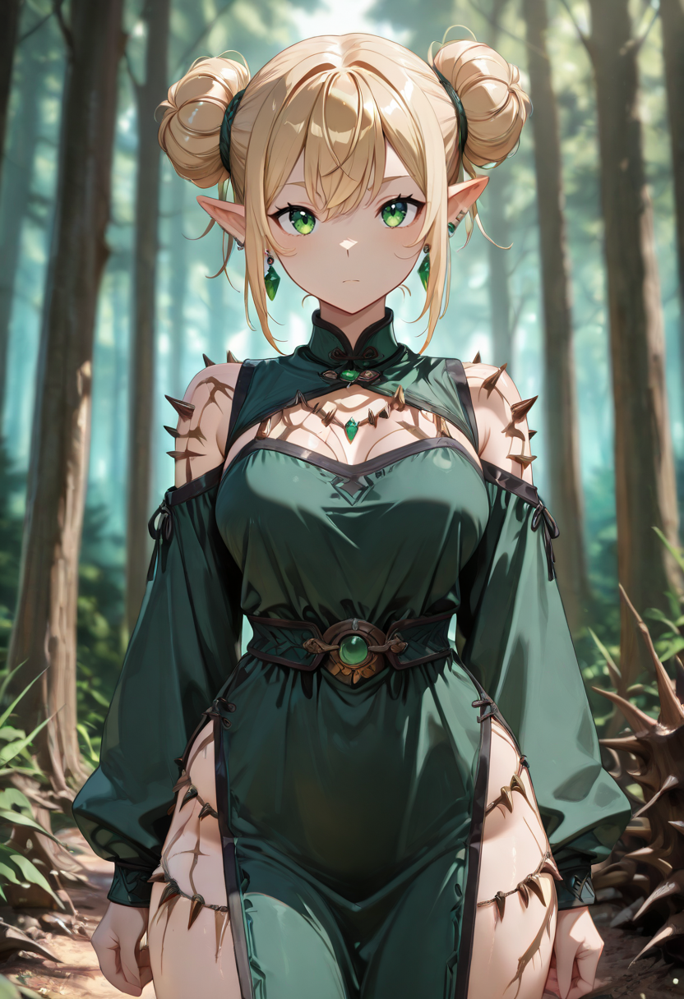
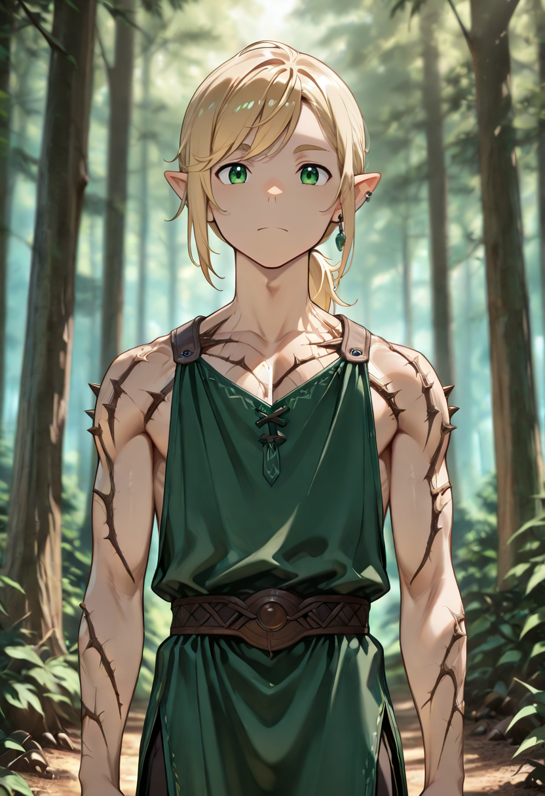
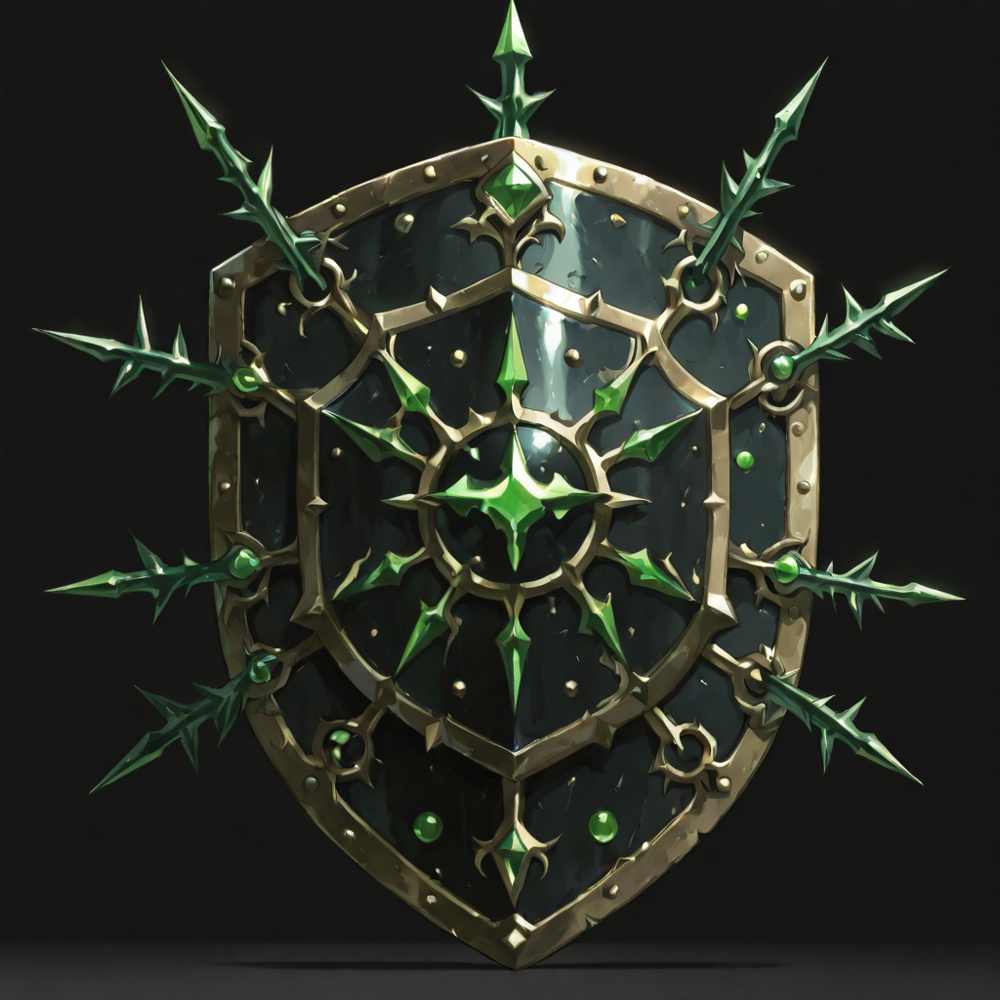
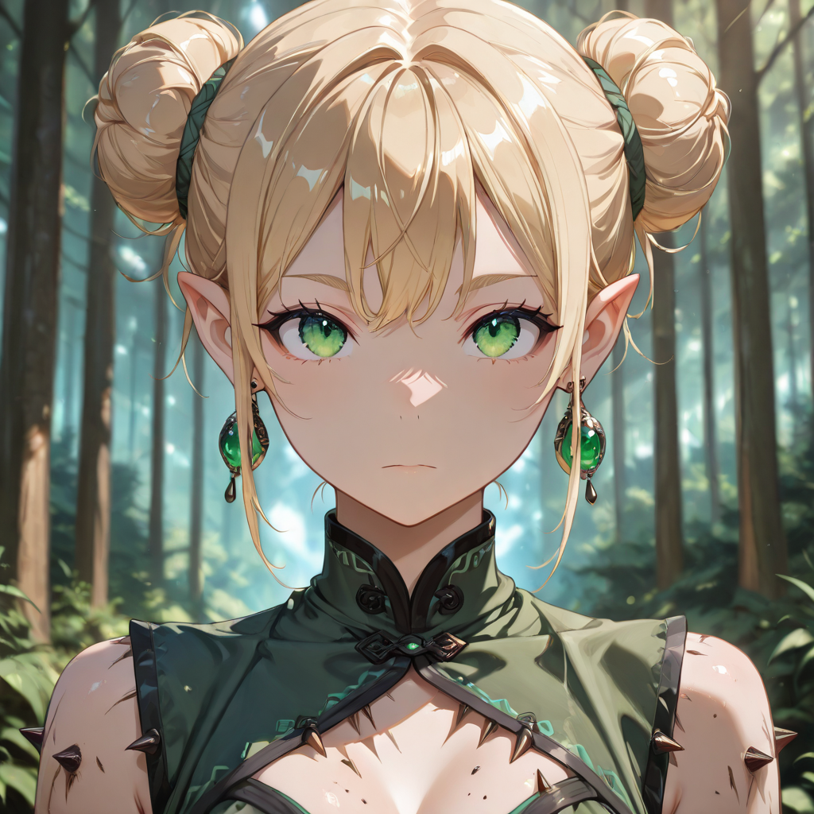
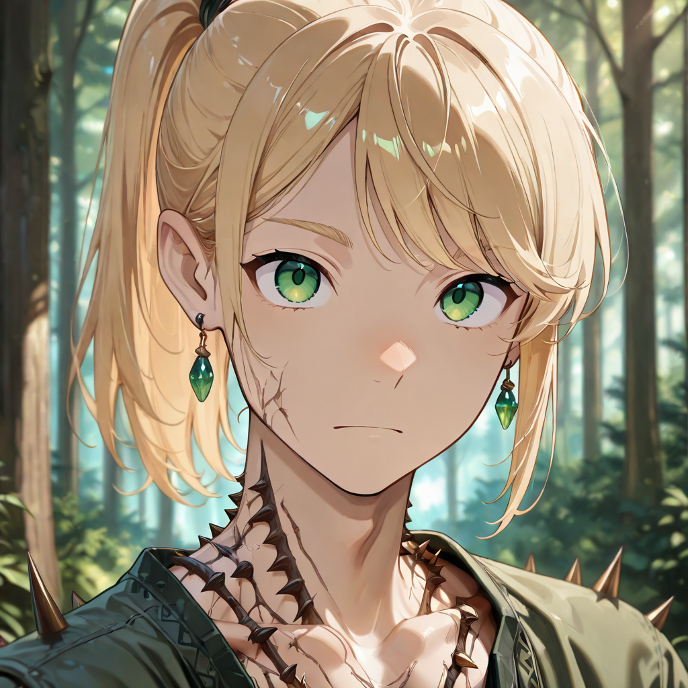

Almost Home
They remember pointed ears. The smell of pine resin and damp moss after rain. The particular silence of a forest at night, when every sound matters and every shadow is read instead of feared. They do not yet have a name for this , but it feels like home.
The last traces of arboreal form have nearly dissolved. What remains is lighter, faster, and far more dangerous. Their skin has taken on a faint greenish iridescence, their reflexes moving closer to the elven heritage their soul is beginning to recover. They have also learned something new and terrible: that the body, when armored against attack, can become a weapon in itself.
Armature di Spine is a passive defense that emerges naturally at this stage. The Assassin does not choose to have thorns , they simply do. Any aggressor who strikes them hard enough feels the poison return through their own impact. The forest does not attack. But it does remember everything that bleeds within it.
Tactical Data

Slash
Base Attack
Stealth Attack
Active Skill
Thorn Armor
PassiveGallery

